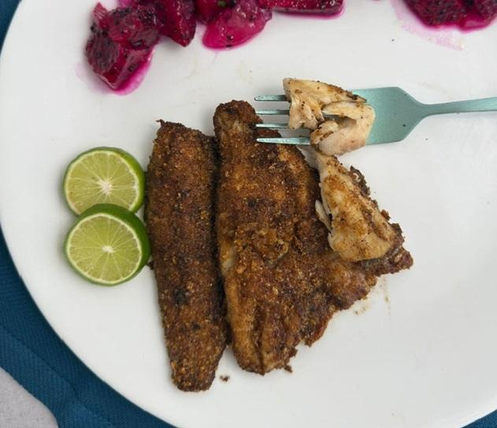
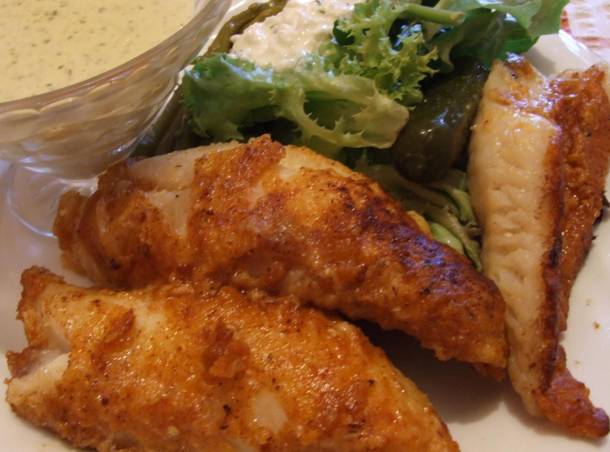

Yellow perch might be the most underrated eating fish in Quebec. Small, fiddly to clean, easy to overlook when there are walleye and trout in the same water. That's a mistake. The flesh is delicate, sweet, and fine-grained in a way that bigger fish rarely are. Fried in butter with nothing more than seasoned flour and a squeeze of lemon, they're as good as anything you'll pull out of a Quebec lake or canal.
The Canal de Lachine runs right through Montreal and holds a solid perch population. It's accessible, well-stocked, and you don't need a boat. A light spinning rod, a small jig or worm, and some patience. The fish run small — typically 150 to 250 grams — which means you'll want a dozen or more for a proper meal. That's not a problem if they're biting.
The cleaning is the one genuine inconvenience. Perch are easy to scale but the fillets are thin, and you'll spend time at the cutting board. Worth it. Once they're prepped, the cooking takes eight minutes. Butter, hot pan, seasoned flour, done.
The One Rule That Matters
Get the pan hot before the fish goes in, and don't crowd it. Perch fillets are thin and cook fast — overcrowd the pan and they steam instead of fry, which kills the crust entirely. Work in two or three batches if needed, and keep finished batches on a rack in a low oven at 90°C while the rest cook. Don't stack them or cover them. The crust will hold for about ten minutes that way.
The other thing: dry the fillets completely before dredging. Any surface moisture prevents the crust from forming. Paper towel, press firmly, set on a rack. This takes thirty seconds and it makes a real difference.
Building the Crust
Seasoned flour — salt, pepper, garlic powder, smoked paprika — dredged lightly and shaken off. Press each fillet so the flour adheres, then rest them on a rack while the pan heats. Neutral oil goes in first to bring the temperature up, then butter. Wait for the butter foam to subside before the fish hits the pan. That's your cue that the temperature is right.
Crushed garlic cloves and fresh thyme go in with the fish — they perfume the butter and add a quiet savoury note without dominating. Two minutes on the first side without touching, then flip for 60 to 90 seconds. In the last 30 seconds, add the final tablespoon of butter and baste the fillets continuously. It deepens the colour and rounds out the flavour.

"The flesh is delicate, sweet, and fine-grained in a way that bigger fish rarely are. Fried in butter with nothing more than seasoned flour and a squeeze of lemon, they're as good as anything you'll pull out of a Quebec lake or canal."
The Full Recipe
Ingredients — The Fish
- 700g to 900g yellow perch fillets, skin on or off
- ¾ cup (100g) all-purpose flour
- 1 tsp fine salt
- 1 tsp black pepper
- ½ tsp garlic powder
- ½ tsp smoked paprika
- 3 tbsp unsalted butter
- 1 tbsp neutral oil (canola or grapeseed)
- 2 garlic cloves, lightly crushed
- 3–4 fresh thyme sprigs
To Finish
- 1 lemon — half for juice, half cut into wedges
- Flaky sea salt
- 2 tbsp fresh flat-leaf parsley, roughly chopped
To Serve
- Crusty bread, boiled potatoes, or a simple green salad
Method
- Dry the fillets. Pat every fillet completely dry with paper towel. Any surface moisture prevents the crust from forming.
- Season the flour. Combine flour, salt, pepper, garlic powder, and smoked paprika in a shallow bowl. Dredge each fillet, pressing lightly so the flour adheres, then shake off the excess. Set on a rack while the pan heats.
- Heat the pan. Put a large heavy skillet — cast iron if you have it — over medium-high heat. Add the neutral oil and let it get hot. Add 2 tbsp of the butter. When the butter foams and the foam starts to subside, the pan is ready.
- Fry in batches. Add the crushed garlic and thyme, then lay the fillets in without crowding. Work in two or three batches if needed. Cook 2 minutes on the first side without touching. Flip and cook 60 to 90 seconds. Pull when golden and the flesh is just opaque through.
- Baste. In the last 30 seconds, add the remaining tablespoon of butter and tilt the pan, spooning the foaming butter over the fillets continuously.
- Finish and serve. Transfer to a warm plate. Squeeze lemon over immediately, scatter parsley, hit with flaky salt. Serve with lemon wedges on the side. Get them to the table while the crust is still crackling.

A Few Notes
On quantity. Perch fillets are small. Budget 175 to 225g of raw fillet per person as a main, which typically means 4 to 6 fillets each. Catch more than you think you need.
On pan temperature. Perch fillets are thin — 3 to 4 minutes total is all it takes. Don't walk away from the pan. Medium-high is the right heat; any hotter and the butter burns before the fish is done.
On holding for a crowd. Keep finished batches on a rack in a single layer in a low oven at 90°C. Don't stack or cover them — the crust will go soft. They'll hold for about 10 minutes before quality drops.
Serve immediately. Perch don't wait. The crust is at its best the moment it comes out of the pan. If you're eating at a table, get everyone seated before the last batch hits the oil.

20+ years fishing Quebec's freshwater systems. Kayak angler, catch-and-release advocate, and founder of Sub Urban Anglers.
Read More About Me